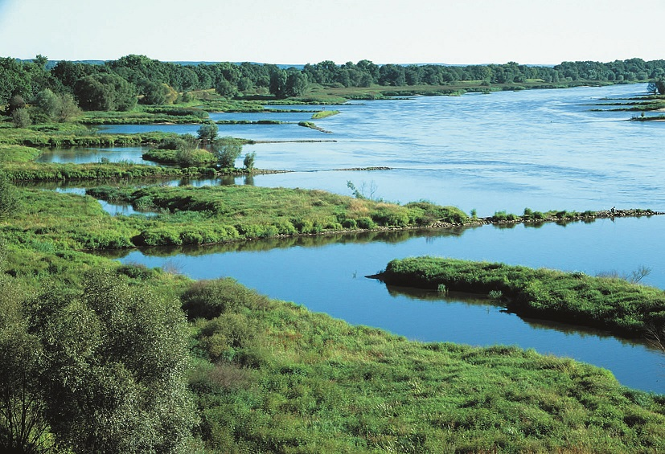

Odra
Odra (niem. Oder, cz. Odra, górnołuż. Wodra, łac. Viadrus, Oddera) – rzeka w Europie Środkowej, w zlewisku Morza Bałtyckiego, na terenie Czech, Polski i Niemiec. Pod względem całkowitej długości jest drugą (po Wiśle) rzeką Polski. Biorąc pod uwagę tylko jej część w granicach Polski, jest trzecią rzeką pod względem długości (po jej dopływie Warcie). Rzeka ma długość 854,3 km[1], z czego 742 km[2][3] w Polsce (dawniej Odra miała ponad 1000 km długości, jednak w wyniku regulacji została skrócona[4]). Powierzchnia jej dorzecza obejmuje 118 861 km²[2][3], z czego 106 056 km² w Polsce[2][3]. Źródło Odry znajduje się we wschodnich Czechach, w Górach Odrzańskich w Sudetach, na wysokości 634 m n.p.m.[5], na południowo-wschodnim zboczu Fidlovego kopca na terenie poligonu wojskowego Libavá. Rzeka uchodzi do Roztoki Odrzańskiej, będącej zatoką Zalewu Szczecińskiego, w północno-zachodniej części Polski, przy północnej granicy miasta Police. Największymi miastami nad Odrą są: Wrocław, Szczecin, Ostrawa, Zielona Góra (od 1 stycznia 2015, po zmianie granic miasta) oraz Opole.
Odra ma źródło na południowo-wschodnim zboczu wzgórza Fidlův kopec w Górach Odrzańskich na wysokości 634 m n.p.m. w pobliżu miejscowości Kozlov(cz.)[5]. Płynie przez Bramę Morawską, poniżej przez Śląsk. W górnym biegu pomiędzy Boguminem a ujściem Olzy[2] na krótkim odcinku jest rzeką graniczną między Polską a Czechami, a w dolnym – od ujścia Nysy Łużyckiej (w km 542,4) stanowi granicę między Polską i Niemcami przez 161,7 km długości swojego biegu[1][6]. Na Pomorzu Zachodnim, powyżej Gryfina we wsi Widuchowa, w 704,1 km biegu, Odra rozdziela się na dwa nurty: Odrę Wschodnią (która przechodzi w Regalicę do jeziora Dąbie) i Odrę Zachodnią. Odra Wschodnia rozdziela swe wody pomiędzy Regalicę i Skośnicę, gdzie Skośnica łączy się z Odrą Zachodnią i tworzy główny nurt Odry. Odra płynie przez centralne osiedla Szczecina i omija od zachodu jezioro Dąbie, jednakże jej wody rozdzielają się pomiędzy kanały portowe: Duńczyca, Parnica i Święta. Dalej w Szczecinie – Odra łącząc się z wodami Przekopu Mieleńskiego płynie na północ przy wyspie Dębina. Następnie od lewego brzegu przy wyspie Żurawi Ostrów rozdziela się Kanał Skolwiński. Dalej odbiera część wód z jeziora Dąbie poprzez kanał Babina. Za Żurawim Ostrowem z Odrą łączy się Kanał Skolwiński oraz Iński Nurt z Dąbia. Wypływając ze Szczecina – Odra dzieli się na Wietlinę i Domiążę. Następnie przy wyspie Długi Ostrów, rzeka rozdziela się na zachodni Wąski Nurt (Kanał Policki) oraz Szeroki Nurt. Po minięciu wyspy Wielki Karw oba ramiona Odry łączą się, a następnie uchodzą do Roztoki Odrzańskiej, będącej częścią Zalewu Szczecińskiego. Średni spadek rzeki w jej górnym biegu wynosi 7,2‰, poniżej Bramy Morawskiej spadek zmniejsza się do 0,33‰, a średni spadek na całej długości wynosi 0,74‰[7]. Podział biegu rzeki Odry[8]: bieg górny – od źródeł po profil wodowskazowy Koźle (w Kędzierzynie-Koźlu, tuż przed ujściem Kanału Gliwickiego do Odry) bieg środkowy – od Kędzierzyna-Koźla po ujście Warty do Odry bieg dolny – od ujścia Warty do Odry po ujście do Zalewu Szczecińskiego.
